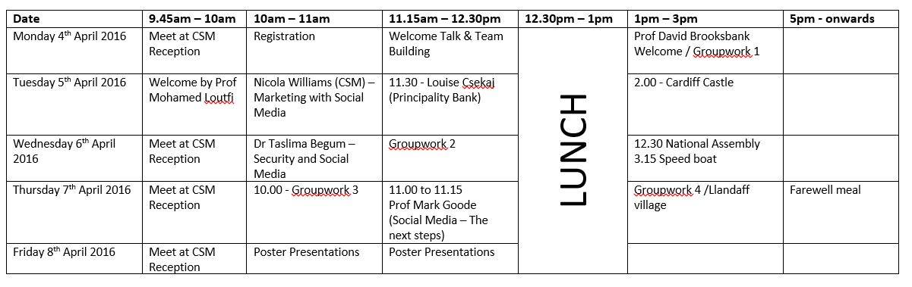
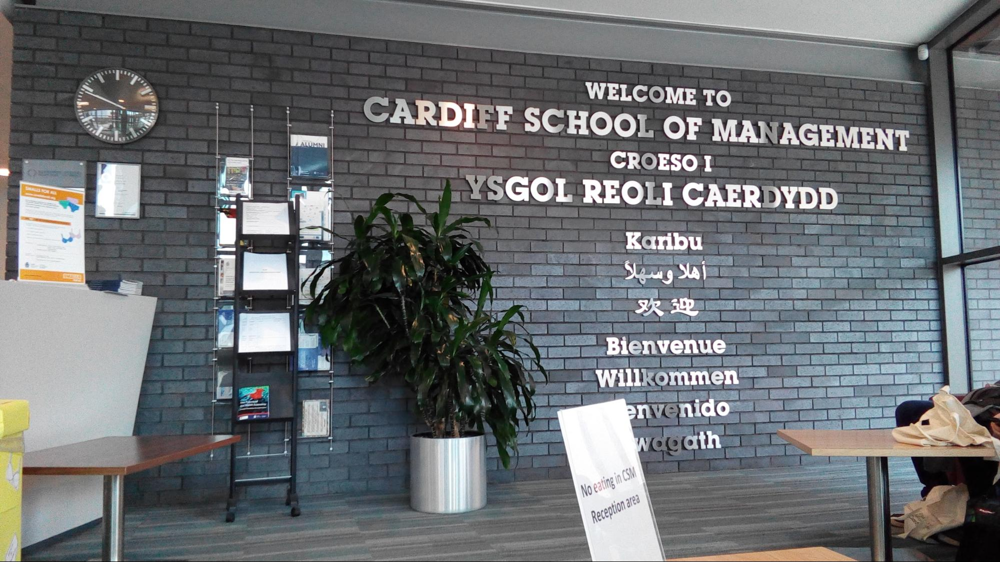
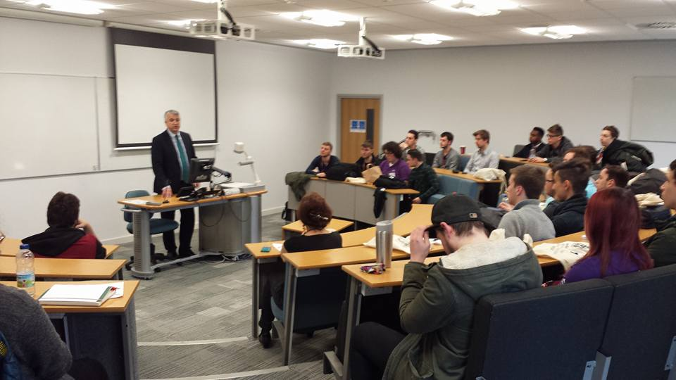
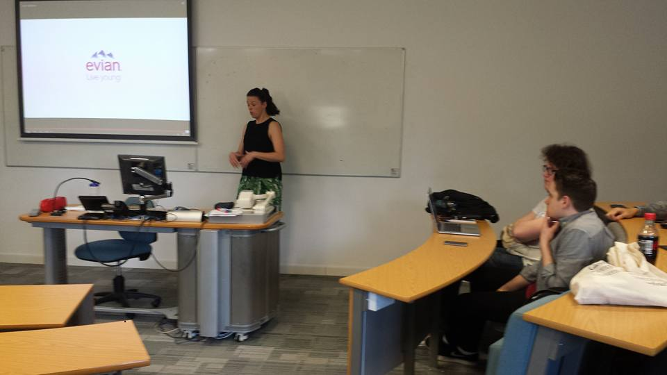
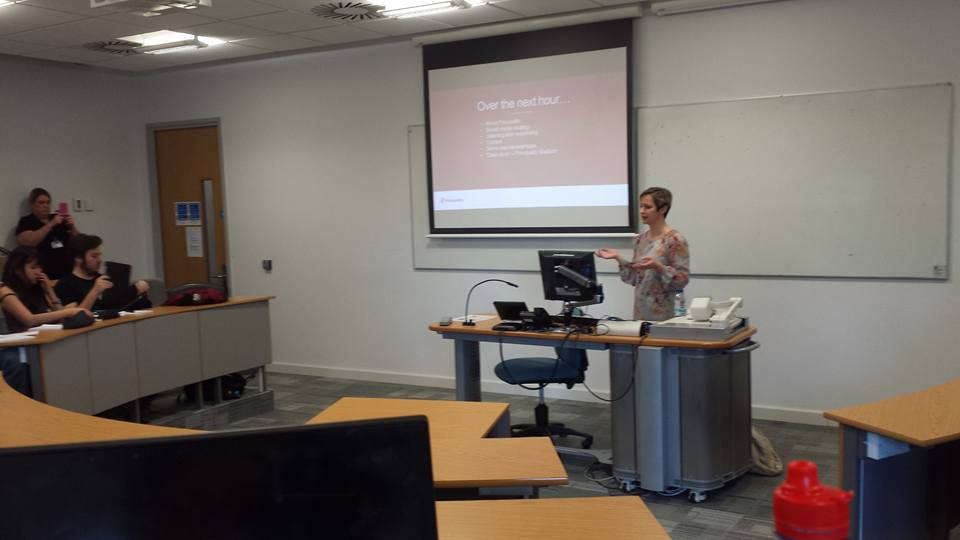
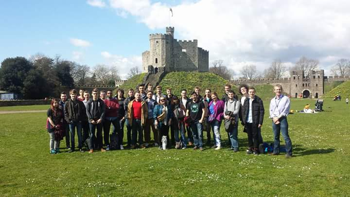
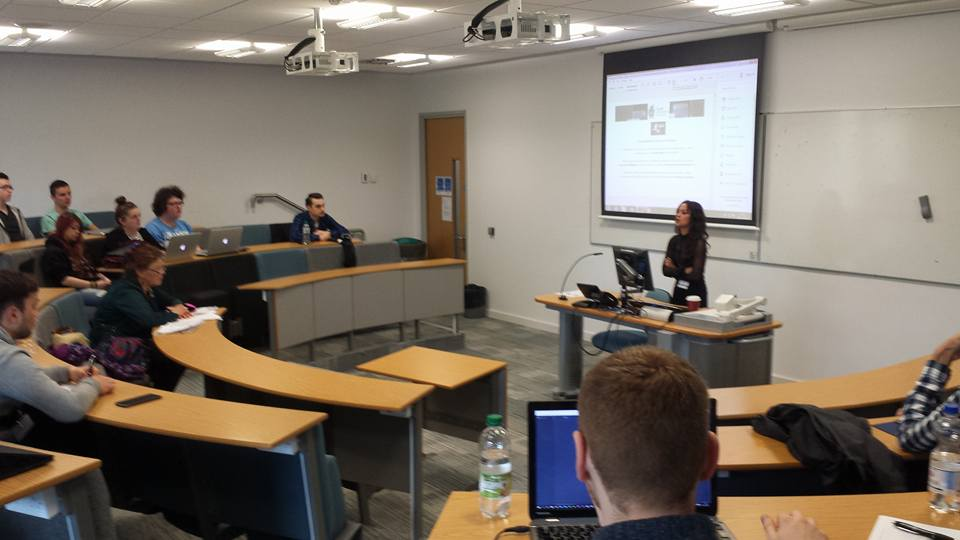
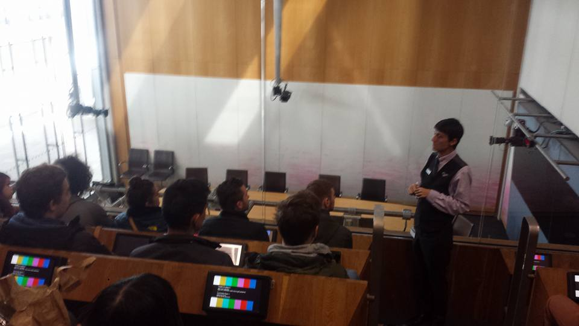
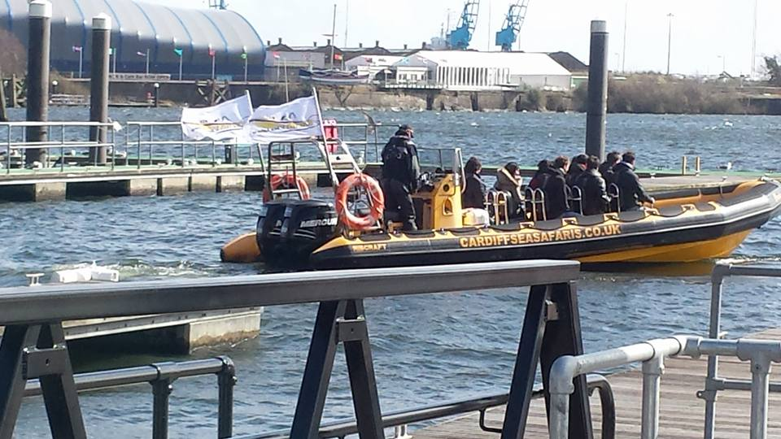
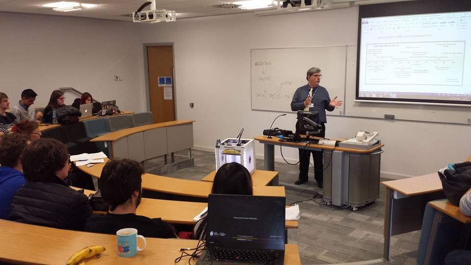

Locatie: Cardiff
Datum: 04/04/2016 - 08/04/2016
Medestudenten PXL:
- Bram Nagtegals
- Kevin Buschgens
- Ruben Huybrighs
Hieronder in de planning ziet u een algemeen overzicht van alle activiteiten. 
Maandag

We kwamen samen aan de receptie van Cardiff Metropolitan University en kregen een korte toelichting over het gebruik van de bus en waar we moesten verzamelen iedere morgen. We kregen ook een zak met pen, papier en naamkaartje mee. Hierna moesten we meekomen naar een lokaal waar we een algemene uitleg kregen over onze week in Cardiff. Na de uitleg werden we opgedeeld in groepen en moesten we voor teambuilding een oefening maken.
In de namiddag kregen we eerst een korte verwelkoming door de directeur van de school. Vervolgens werden we opgedeeld in 2 groepen en moesten we een concept bedenken hoe we het toerisme van Cardiff zouden kunnen verbeteren via sociale media. Op het einde van de dag moest iedere groep in het kort toelichten welke platformen we zouden gebruiken, op welke manier en waarom.

Dinsdag
Seminarie
Nicola Williams is een marketeer die op een aangename en energievolle manier een seminarie gaf. Het seminarie ging over hoe sociale media gebruikt wordt door grote bedrijven. Ze gaf ook meerdere voorbeelden via filmpjes hoe marketing gedaan wordt door de grote bedrijven en wat de goede en slechte dingen hieraan waren.

Hierna kregen we een kleine pauze gevolgd door een tweede seminarie door Louise Czekaj. Zij stond in voor de sociale media van de “bank” Principality Building Society dat hypotheken verkoopt. Ze vertelde ons hoe ze dingen aanpakt en hoe deze een negatieve of positieve invloed kunnen hebben voor het imago van een bedrijf. Een voorbeeld hiervan was toen ze het Millenium Stadium Cardiff sponsorde en de naam veranderde naar Principality Stadium Cardiff waardoor er heel veel mensen kwade reacties achterlieten op hun sociale media pagina’s.

In de namiddag hebben we een uitstap gemaakt naar Cardiff Castle. We hebben hier een tweetal uur rondgelopen en foto’s gemaakt.

Woensdag
Seminarie
We begonnen de dag met een seminarie van mevrouw Taslima Begum. Ze vertelde ons wat de gevaren van sociale media waren en hoe sociale media onze informatie gebruikt zonder dat we dit weten. Ze raadde ons aan om ons sociale media platformen zoveel mogelijk te beveiligen.

Na de lunch zijn we samen vertrokken naar het National Assembly gebouw of ook Senedd. Dit lag in Cardiff Bay. In dit gebouw opereert eigenlijk de ‘regering’ van Wales. Ze hebben macht op gebied van gezondheidszorg, school en nog meer maar niet alles. We kregen hier een rondleiding met een gids die ons geschiedenis meegaf en hoe hij de toekomst zag. Het was een nieuw gebouw dat economisch vriendelijk was.

Na de rondleiding zijn we met een speedboot weggeweest op Cardiff Bay. Dit was een unieke ervaring voor ons en we waren redelijk nat na de boottocht.

Donderdag
We zijn vrijwel direct begonnen met het maken van onze poster. We kregen hier zo goed als de ganse dag voor. Om 11 uur werden we naar een lokaal gebracht omdat we nog een korte seminarie gingen krijgen van Prof David Brooksbank over hoe sociale media in de toekomst er uit zal zien. Maar dit seminarie was eigenlijk hoofdzakelijk gefocust op 3D printen en 4D printen in de toekomst. Veel sociale media over de toekomst was hier dus eigenlijk niet aan volgens ons. Het was wel interessant om te zien hoe de toekomst eruit zal zien op gebied van technologie en het printen van onderdelen. 4D printen is iets dat in de toekomst zal opkomen en print een onderdeel dat zichzelf kan herstellen of veranderen van vorm.

Vrijdag
Volgens Rowena was het niet de moeite om nog te komen voor ons op vrijdag omdat we onze bus al om half 12 terug hadden. Ze zei ook dat het niet verplicht was om aanwezig te zijn omdat er enkel een korte toelichting werd gegeven over onze gemaakte posters.
Mijn groep:
- Cloots Vone
- Jel Sadones
We hebben uiteindelijk gewonnen met de beste poster van onze theoretische Social Media strategie.